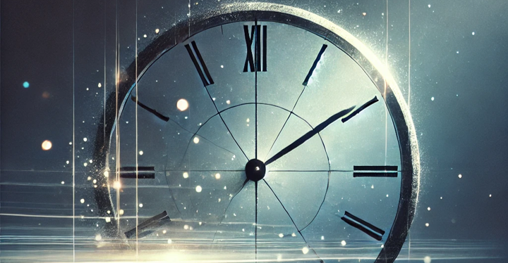
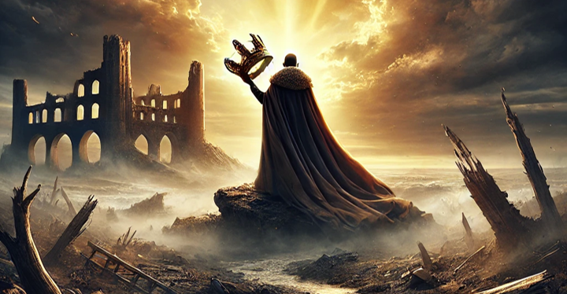

Clocks
Esta canción explora el paso del tiempo y la sensación de urgencia en la vida. También podría interpretarse como un dilema existencial o una reflexión sobre decisiones importantes. El protagonista se siente atrapado entre su corazón y su mente, buscando un propósito mientras el tiempo avanza inevitablemente.

Paradise
Esta canción aborda la búsqueda de esperanza y el refugio en los sueños cuando la realidad no cumple con nuestras expectativas. La protagonista, simbolizada como una niña que anhela una vida mejor, encuentra consuelo en imaginar un "paraíso". El uso de imágenes como elefantes y paisajes vastos sugiere la conexión con la naturaleza y la universalidad del deseo de escapar.
Viva la Vida
Es una reflexión sobre la pérdida del poder y el arrepentimiento. Narrada desde la perspectiva de un antiguo líder o rey caído, la canción recorre su nostalgia por la grandeza pasada y su confrontación con la mortalidad. Contiene alusiones históricas y bíblicas que refuerzan el carácter épico y universal de su mensaje.
